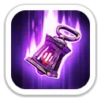
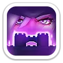

Фрея — копейщик 10 поколения для PvP, Арены и атакующих маршей. Она сочетает массовый урон и обездвиживание в Освоении с сильным набором Экспедиции: снижает атаку противника, получает шанс на дополнительный удар и усиливает пехоту со стрелками.
ПолучениеЗал героев, магазин Литейной и универсальные мифические осколки
Главная рольPvP, Арена, атакующие марши
Для F2PСильная, но заметно дороже героя Колеса удачи Бланшетт
Проверено23 октября 2026
Характеристики
Максимальные значения героя по актуальной карточке источника.
12 364Атака героя
12 364Защита героя
123 654Здоровье героя
1 110,88%Атака копейщиков
1 110,88%Защита копейщиков
Навыки Освоения
Фрея давит массовым уроном, контролем и серией критических атак.
Цепь Разлома
Основной массовый урон
Атакует цель цепями и наносит урон цели и окружающим врагам. Оставляет метку: при атаках по отмеченной цели часть урона передаётся соседним врагам.
Важно: «Ночной рейд» усиливает именно пехоту и стрелков. Для смешанного марша это очень полезно, но сам класс Фреи — копейщики.
Эксклюзивное снаряжение

Коса Кровавой Луны
Максимальные бонусы: +2 506 атаки, +2 506 защиты, +25 065 здоровья героя, +277,5% смертоносности и +277,5% здоровья войск.
Ночной рейдНа максимуме повышает урон Фреи на 30% и мгновенно наносит призванным противникам урон в размере 300% атаки.

Защитник ДозораНа максимуме повышает защиту войск защитников на 15%.
Где использовать Фрею
Арена
Очень сильна за счёт массового урона, обездвиживания и резкого роста шанса крита.
PvP
Снижает атаку всей армии врага и одновременно усиливает пехоту со стрелками.
Сборы
Полезна как лидер сильного атакующего марша, особенно при хорошем эксклюзивном снаряжении.
Свирепый медведь
Рабочий герой за счёт дополнительного урона, но её первый навык Экспедиции является дебаффом, а не прямым бонусом урона сбору.
Приоритет прокачки
1Туман войныГлавный универсальный PvP-дебафф.
2Коса Кровавой ЛуныСтабильно добавляет урон через 50% шанс «Жатвы».
3Ночной рейдСилен в маршах, где много пехоты и стрелков.
Плюсы и минусы
Плюсы
До −20% атаки всех вражеских войск.
50% шанс дополнительной атаки после обычного удара.
Одновременно усиливает пехоту и стрелков.
Сильный контроль и массовый урон в Арене.
Очень высокие характеристики 10 поколения.
Минусы
Не герой Колеса удачи, поэтому для F2P значительно дороже Бланшетт.
Часть силы зависит от вероятности срабатывания «Жатвы».
«Ночной рейд» не усиливает собственный тип войск Фреи, копейщиков.
Эксклюзивное снаряжение частично ориентировано на защиту.
Итог
Фрея — сильный копейщик 10 поколения для PvP и Арены. Её главные козыри — массовый контроль, до −20% атаки противника и хорошая синергия с пехотой и стрелками. Для F2P первым приоритетом поколения обычно остаётся Бланшетт из Колеса удачи, а Фрея становится дорогим, но очень мощным следующим усилением.